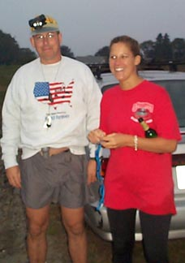
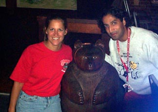
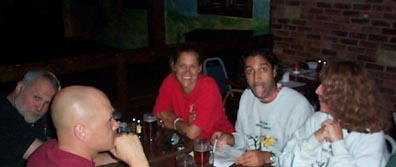
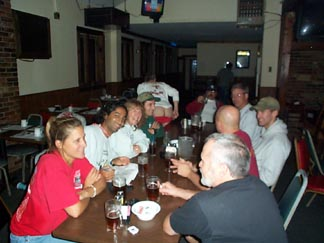

Run # 803 September 24,2001
Hare: Just Susan (Ms. Potatohead); Co-Hare: Oozing SD (The Spud Stud)

The nervous virgin hare and her escort
Scribe: The Slasher Dr W.H.O.
Where: Little Compton, Young's Farm
The Weather: yes
Present: Async (Arugula Boy), WIPOS (Out of his Gourd), Dr. WHO (Cob-you-later), PW (Butternut), Shine On HM (Lend me your Cucumber), Bondo Jovi (Carrot Man), Basket Boom boom (Rhubarb won't rise), Short Peck (Tater Tot).
RIH3 Groupies:
Surfin' Compusex (Cumquat), Just
Peter (Pumpkinhead).
Virgin: Just
(We don't know) Jack.
Mismanagement: Ben, Jake, Baxter, Zoe.
Prologue:
1800 LMT, Tuesday September 18, 2001
A reinforced cave, about 35 kilometers south of Kabul, Afghanistan
The cave, lit with flickering torches showed a bare and spartan puritanism, and
willingness to endure hardship for a cause. Two men arose from their prayer
rugs, facing southwest, at the sound of an ancient Teletype coming to life and
typing out vital messages. Both wore flowing robes, turbans and had long dark
beards, tinged with grey.
The taller one said, reading: "By the beard of the prophet, this is good
news. The Yanqui dogs have cancelled more airflights, closed more sporting
events and yet they still allow the broadcasts of the Roumi pig Oprah
bin-Winfrey."
"Here, brother," said the first, "by the sacred scrotum of Abdul
Abulbul Emir, they shout their impotent threats against those of the true faith,
little knowing of the weakness of their swords against those who have performed
the circumnambulation of the Ka'aba."
"La ilaha ill Allah."
"Abou Ben Adem, may his tribe increase!"
Suddenly a note from the internet caught the smaller one's eye. Grasping his
naik, he paled and would have fallen but for the support of the other. "By
the tent post of Ahab the Arab, brother, what meanest this?"
With a shaking hand, the short man said: "Look brother, by the Mystic
Mighty
Muslim Mons of the Mother of Mecca, the Rhode Island Hash House Harriers, those
infidel dogs, didst NOT cancel their run last night, and in defiance of our
people, drank beer and sang many songs whilst getting lost in the woods."
"But what does that mean? Uh.. by the Hallowed Hairy Hajj Whore of Harar."
"Know ye not brother, by the Blessed Balls of the Bab Benu Shaybah, the
words of the prophesy: '...and when the towers of the new Babylon fall, and
there is chaos and much loss of siyik al-Zabab [loosely: frequent flyer miles]:
then, the last of the Fugawi tribe in the West, the Red Cocks, will break with
their sacred ritual and fall to the ground gnashing their teeth and rending
their garments!'"
"But brother, seest thou this! Our former agent, Pyouni Ou'ini, known as PW
to the infidels, has stolen the sacred vessel of the Fugawi, the legendary Bugle
of Bum-Bum. Surely this will turn the tide in our favor!"
Stroking his beard, the other replied: "We shall see, brother. We shall
see."
The Run:
1800 HST, Monday, September 24, 2001. Somewhere in Little Compton, RI, USA
A festive group of hashers gathered in the waning sunlight and mist in the back
forty of one of Little Compton's most prominent farms. Their optimism for a fine
outing seemed justifiable at first: many thought WIPOS
was still lost from the preceding week; and they were sure Basket
would not come without his horn, Shine On would not
violate the 42nd parallel rule, and PW would not
appear for fear of the consequences should Baxter wreak revenge on Zoe for the
loss of his favorite stimulating device. All hopes were soon dashed as, one by
one the wankers pulled up, until the sight of the final arrivals Basket,
Short Peck and Baxter, sent everyone else sprinting out on trail
prematurely (ejaculating their displeasure).
Trail led east into the farm along fields of potatoes, pumpkins and gourds. PW
had brought the missing horn, and in desperation passed it forward to Async
to keep it out of the hands of Basket. Twin alabaster mounds of clam parts were
passed on the right, carefully sculpted into the likeness of female breasts
[Note: for those who missed the Rhode Island Convergence of the Arts, this
sculpture, "Likeness of Yummy, Reclining", won Honorable Mention in
the Sculpting-With-Rotting-Seafood Division.] The brief game of bugle rugby
which had been going on with Async, PW and Dr.
WHO, stopped at these peaks, and the bugle was added to complete the
effect. Basket, having little interest in female
parts, passed right by.
A brief north loop, then south to an exit from the open field through a puddle
composed of equal parts of urine from: the farm's horses, the local coyotes, and
the Co-hare Oozing (who had felt guilty about the
lack of shiggy on trail and consequently took dangerous quantities of potent
diuretics in an attempt to fill the puddle while setting trail). A brief SE
bushwhack led to an abandoned road, and some paths through holly bushes whose
miniscule prickers could not even draw blood from Shine
On's sensitive skin, although she hooted and hollered as if she was
receiving corporal punishment from the Headmatron of the Women's prison in order
to encourage the virgin hare. At least part of the trail, in an effort to
conserve flour for the upcoming war, was laid by scent: specifically, skunk. It
turned out that the preceding week WIPOS, while
lost in the woods desperate for companionship, had met a skunk in Tiverton.
During the long hours of his absence, he had befriended and then painstakingly
trained the animal to mark large dogs on command, as well as to set trail with
spray. When WIPOS was finally rescued, the
heartbroken animal set off to the south, where days later he met the hare and
joyfully returned to his new-found occupation.
Turning north, a memorial to the Pentagon was encountered, built around an oak
tree as a symbol of the strength at the heart of our nation. This was the beer
check, and soon all gathered around singing with a coyote chorus in the
distance. Just Peter, another latecummer, arrived
following the hideous sounds and odors without seeing any flour at all, in time
for some beer and to listen to Basket and PW
snipe at each other like two aging queens who had worn the exact same
gold-sequined slit-sheath gown to the Gay Pride Ball. This caterwauling had the
effect of making the coyotes leave the woods in disgust, heading into Westport
where people got class. Just Jack, the virgin,
remained ominously silent; he was obviously trying to find a way to escape the
group gracefully. The mosquitoes, unaware of the passage of the season, proved
almost sufficient to make up for the lack of poison ivy on trail, and a fine
respite was had by all.
After sufficient recovery from the grueling mile of flat terrain preceding the
beer check, it was on on into the dark, northwest to the fields. Out on the
fields, the group scattered, their lights making a faerie-like pattern over the
open farm, provoking a fly-over by several spy planes and adding to the already
insurmountable workload of an exhausted F.B.I. But ah, the Fresh Air! Fields,
stretching out so far and wide! "Keep Manhattan, just give me that
countryside!" said Bondo Jovi. Basket,
being led to his horn by the misguided but sympathetic WIPOS,
fell to his knees in thanksgiving. No one accepting his offer, he got up, played
a few notes then followed trail back to the cars.
It was decided to circle in the fields when disaster struck! No Beer! A brief
attempt by Bondo to distill vodka from the raw
potatoes failed, and Oozing and Dr.
WHO were dispatched to the only open store in Little Compton: a Hay,
Straw and Feed store which was owned by an well-known rummy. Bursting their way
in, they appealed to the owner's patriotism ("We're drinking for
America!" they said), and he sold them three six packs of acceptable brew.
Back in a flash (Oozing couldn't resist when he saw
the old ladies), and the circle was joined.
The Hare and Co-hare in the circle, the ratings were begun. Continuing the
alarming tendency towards charity and beneficence, the overall ratings were
good: at least 7 F from Bondo, "good
trail" from WIPOS (Hah! He didn't even get
lost for a little while!), nothing from the absent virgin Just
Jack, who had cleverly disguised himself as a hay bale and rolled off up
the road unnoticed, "no shiggy" from Just Peter,
who never saw the trail in the first place, and 6.9's from the rest. Total
score: -69 (invoking the little known rule that if all comments are positive,
the result is inverted, divided by 6.9 and rolled into a small wad to be thrown
at the on on on). Next the hashit: another unanimous election, this time freeing
WIPOS from the hashit for the first time in months.
Basket was shown to have willingly and with malice
aforethought organized, aided and abetted in the previous week's rescue of WIPOS
(thus ruining weeks of careful planning by the hare Dr WHO).

Hares EagerBeaver (EverReady?)
and Oozing
A naming was called for. Just Susan resumed her
place in the circle, and such stellar choices as "Strap-on Spud",
"Farm-Fresh Laid", "Brainwashed Bimbo", and "Helen
Shapiro" were rejected, settling finally upon "EverReady" as appropriate and fitting. A touching ceremony, and then
they "Swung Low" and moved on to the On on on.

Bondo, Short Peck, EverReady,
Oozing and Shine On
The Lil' Bear Lounge in Tiverton had barely recovered from Dr
WHO'S virgin hash in February, when the group minus only PW
and the virgin Just Jack (still rollin'),
came in to find that they still don't serve food on Monday nights. Pizza was
quickly ordered, and pitchers of Bass were brought to the table. Once a second
round of pitchers came, things began to degenerate as Basket,
Oozing and Bondo found it necessary to stage
a completely accurate re-enactment of the 1990 Gulf War, using beer and jam
soaked napkins to represent Scud and Patriot missiles. Kuwait was
represented by WIPOS. The beer pitchers represented the oil fields. Dr.
WHO played the role of the 3rd Armored Division. The waitress was not
amused, and would have had the group forcibly removed had it not been for the
patriotic nature of the game ("We're re-enacting for America!" they
said.), and the fact that the faculty of the Naval War College are regulars at
the Lil' Bear, and she was quite used to this. With Saddam (Bondo)
soundly defeated, the pizza finished, and WIPOS
falling asleep, the night was declared over. A fine time was had by all!

The RIH3 On On On at the Lil
Bear. Note Basket's best side.
Epilogue:
1800 LMT, Tuesday, September 25, 2001
A reinforced cave, about 22 Kilometers NW of Kabul, Afghanistan
The two men, more fatigue yet still upright and resolute, again stood by another
teletype, receiving the critical intelligence of the evening.
The tall one read: "'U.S. stock market in a tailspin.' Hah! these sons of
Shaitan continue to lose their ill-gotten blood money, and wriggle in impotent
frustration after our master stroke."
The other, reading over the first man's shoulder agreed: "Yes, by the
sacred
peaks of Koh-i-baba, and they waste thousands on fruitless airport security
measures, and perform countless desecrations upon the faithful who reside in
their country, further fueling the flames of Jihad."
"But what, by the beard of the prophet's mother, do you hear of the dreaded
ones, the Red Cocks?"
"Let us see." Reading ahead, he again reeled at the news. "Alas,
brother! The news is too horrible to say. They have recovered the sacred Horn,
they have gamboled in the farmlands, and make mockery of our names in
sweatshirts and paraphernalia, (a surprising bargain at only a few dollars for
an all-cotton sweatshirt, by Allah)! Is it not written '...and when the lost one
is found, the smell fills the land and the trumpet again sounds; that the farm
animals will run scared, the ale will flow, and the Fugawi will spread their
power over the world even unto Mecca itself!'"
"Allahu akhbar! Then our cause is indeed lost!"
"Pray with me brother Gunga."
"You're on your own, you pork-eating son of a Sufi!"
"Camel-fornicator!"
"Wadi-wetter!"
They fell to the ground wrestling, cursing, rending garments, and pulling each
other's beards.
On On
The Slasher Dr. W.H.O.